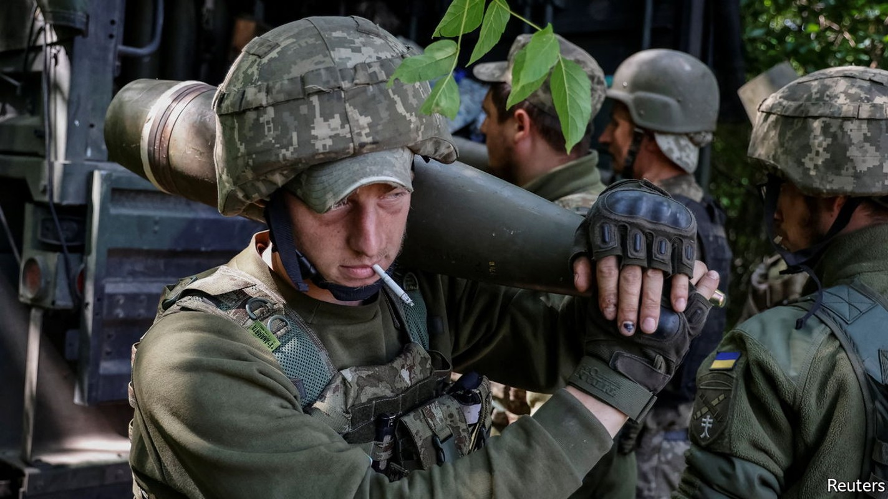

The conflict in Ukraine is settling into a war of attrition
But who can keep going longest?

The war in Ukraine, now in its fourth month, defies simple notions of winning and losing. Russian forces are thought to be in control of most of Severodonetsk, a city at the eastern edge of a Ukrainian salient, having beaten off Ukrainian counter-attacks. Ukrainian resistance is now confined to an industrial zone in the westernmost edge of the town. Yet territorial control is ebbing and flowing. Russia’s net gains in eastern Ukraine between the middle of April and the end of May add up to just over 450 square kilometres (about a third of the size of Greater London) according to Rochan Consulting, a firm which tracks the war; hardly a spectacular bounty. Neither Russia nor Ukraine looks likely to make a decisive breakthrough. Instead, each hopes to grind the other down in a war of attrition.
Russia’s losses have been severe. The invasion force that it initially committed to the war had been reduced to about 58% of its pre-war strength by the middle of May, according to a Western official. By June 1st that had fallen by another few percentage points. Russian battalion tactical groups, the basic fighting formations of the Russian army, probably started the war with around 600 men each; recently some have been seen with only 60, barely larger than a platoon. The damage to armour has been especially dramatic. Russia has lost at least 761 tanks, over a third of them since the beginning of the Donbas offensive on April 18th.
Russian commanders are now throwing old equipment into battle. The t-62, a tank which entered service in 1961 and was spruced up in the 1980s, has been spotted in Donbas in recent weeks, some models adorned with improvised “cage armour” bolted on top to provide rudimentary, and probably ineffective, protection against anti-tank munitions. Tom Bullock of Janes, a defence intelligence company, says that such redundant kit is probably destined for the Donetsk People’s Militia, a Russian proxy force, allowing them to hold a defensive line and freeing up the Russian army for more important tasks.
Much less is known about the state of Ukraine’s forces. Western officials are saying nothing that might undermine Ukrainian morale, and there is less open-source evidence, such as imagery on social media, showing its losses. What is clear, though, is that Ukraine has also taken a mauling. On May 31st Volodymyr Zelensky, the country’s president, said that 60 to 100 of his soldiers were dying each day, with 500 more being wounded—loss rates comparable to some battles of the second world war. Western officials say those figures are broadly accurate. One says that Russian and Ukrainian loss rates are now about the same. The morgue in Bakhmut, an immediate destination for Ukrainian soldiers killed in fighting to the east, was reported to be overflowing this week, with bodies left outside on the street.
If the war is settling into a contest of attrition, which side is more likely to prevail? A great deal depends on which country can produce a steadier flow of manpower, equipment and ammunition. Vladimir Putin, Russia’s president, has so far refused to conduct a nationwide mobilisation of reservists and conscripts, but there is evidence that the country’s defence ministry is trying to lure men with military experience back into action with the promise of pay packets as hefty as $5,000 per month—six to eight times the salary of an average lieutenant.
Ukraine’s problem is different. It has an ample source of motivated recruits, but insufficient people to train them. Konrad Muzyka, the founder of Rochan Consulting, says that the number of would-be recruits for the armed forces is so high that there is a waiting list of over a month to be inducted. That suggests that in the short term it will be very difficult to build the six new brigades—25,000 men—that a Ukrainian official recently told the Financial Times would be necessary for a major counter-offensive to take back land in the east and south.
On the face of it, equipment should be less of a problem. America, Australia and European countries have all sent more artillery, ammunition and other arms to Ukraine over the past month. America, Britain and Germany have also promised rocket launchers that can strike around three times farther than those artillery systems. These probably will not come quickly enough to halt Russia’s conquest of Severodonetsk and possibly nearby towns, such as Lysychansk, which Mr Zelensky visited in person on June 5th. The Pentagon says that it will take weeks to train Ukrainian forces on the himars rocket launcher.
But if the war drags on for months or even years, as American and European officials now expect, these foreign weapons will play a vital role. Ukraine is either out of some types of Soviet-standard ammunition or close to it, says Michael Kofman of cna, a think-tank. The stocks of such ammunition in former Warsaw Pact states, like Poland, will also run dry in time. If Ukraine’s army can switch to nato-standard arms, it would allow Western countries to underwrite a much longer campaign. “Even though the local military balance in… Donbas appears favourable to Russia, the overall trends in the military balance still favour Ukraine,” argues Mr Kofman—if, that is, Western support is sustained.
Many European countries are also running low on some of the weapons being sent to Ukraine, such as anti-tank missiles; and it could take years to ramp up production. Nor is it straightforward for Ukraine to absorb the new weaponry. Though Western defence officials have been impressed by the speed with which Ukrainian troops have got to grips with the new kit, maintaining dozens of new and unfamiliar systems in wartime conditions is not easy. The Economist understands that many artillery pieces have already had to be sent back to Poland for repair. Russia still has the advantage in guns.
The Biden administration believes that the $40bn package of assistance signed by the president on May 21st will allow a “high tempo” of military aid to continue until nearly the end of the year. In practice, both sides will need to pause fighting, to rest and rebuild their battered armies long before then. Yet the fighting is then likely to resume. Mr Putin has a cynical view of Western staying power. He believes that European and transatlantic divisions will widen as the war drags on. Higher energy prices, inflation and wider economic disruption might encourage those who want an early ceasefire. “We cannot make that mistake again,” argued Kaja Kallas, Estonia’s prime minister, on June 6th, citing Russia’s land grab in Georgia in 2008 as well as the Minsk deals negotiated by France and Germany after Russia’s first invasion of Ukraine in 2014. “We have to be prepared for a long war.”■